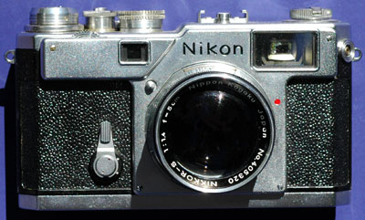

Nikon S3于1958年3月生产，1960年10月停产，于1965年8月再次限量生产，1967年3月停产。这是一台可以更换镜头的旁轴相机，早期机型与后期机型略有变化，1958年秋天以前的机型，取景放大倍率为1.0X，后期机型改成0.9X。
我有个NIKON S3 Limited edition Black,配的50mm 1.4的镜头,成像没的说.不过收藏机,不能用的太多，拍了一卷,等于作了准备活动就回家了.做工哪个精细。但和LEICA比，外观稍嫌复杂。
不知道有什么优点。
不知道有什么缺点。
这个东西我2003年初在日本东京都町田市的淀桥（YODOBASHI）摄影器材店里见过2000年产品，初始报价是48万日元（约合人民币3.2万元），但是，这个东西售价是随时间降低的，当时我问价时营业员拿着计算器算了半天，告诉我是32万日元（大约可以折合人民币2.2万元）。看了日本杂志的一些介绍，说是把当年的图纸翻出来时，当时在图纸上签字的某人现在已经是公司的董事长了。等等。有很多轶闻，但无绯闻。
经典，传统
太贵了。现在北京五棵松摄影器材城卖4万元人民币，就更贵了。